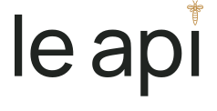
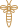

Прежний 02 / контроль

#0B2119
le api / МЯГКИЙ ГРОТЕСК 02 / УТОЧНЕНИЕ
Шрифт понравившейся доработки сохранён. Исходная детальная пчела возвращена и немного поднята над i.


Сохранены все 15 исходных контуров: усики, голова, рисунок крыльев, корпус и полосы. Контур усилен для более уверенного изображения.
Буквы l, e, a, p и i сохранены из Manrope Medium. Проверены общий уровень, просветы и отсутствие пересечений.
В мастер-сетке 92 px: le — 9,21; ap — 10,45; pi — 10,67. Пробел между словами — 20,88.
Пчела стоит на оси i. Просвет до буквы — 6,00 единиц мастера: выше предыдущего решения, без большого отрыва от слова.
Интервалы оценены оптически. Золотое сечение не является универсальным правилом построения шрифта и не подменяет эту проверку.
Рекомендую B — глубокий изумруд. Он светлее прежнего 02 и сохраняет сдержанный характер. Буквы на зелёном фоне светлые, пчела — единственный тёплый акцент. Все четыре карточки используют одинаковый логотип.
Палитра ещё не утверждена. Для сравнения смотрите эту же страницу на разных экранах; временно отключите Night Shift и цветовые фильтры, если они включены. Новый оттенок пока не перенесён в приложение.
Мастер полностью векторный. На малом экране тонкие линии физически становятся меньше пикселя: детализация сохранена в файле, но её различимость зависит от размера и дисплея. Проверка на физических экранах и в печати ещё предстоит.
le — артикль женского рода множественного числа; api — множественное от ape, «пчела». Строчные буквы и пробел соответствуют итальянскому выражению «пчёлы». В логотипе пчела заменяет точку обычной i; в тексте пишем le api.
Источники: Treccani: ape, Treccani: артикли.
Этап согласования логотипа. Действующий логотип главной страницы и приложение сохранены.